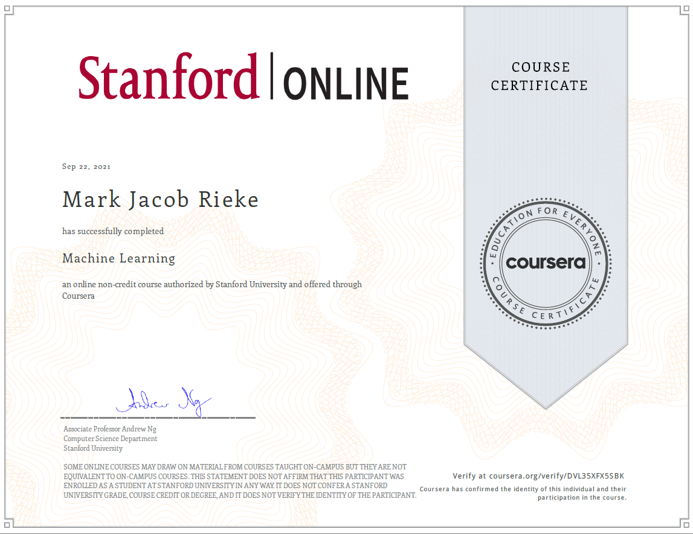
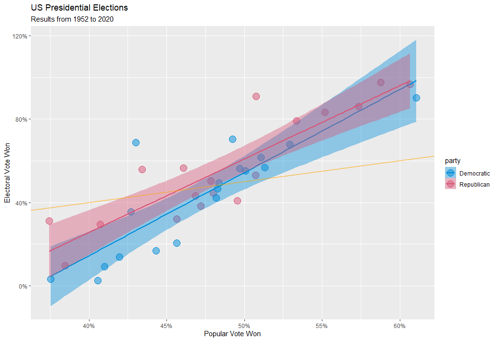
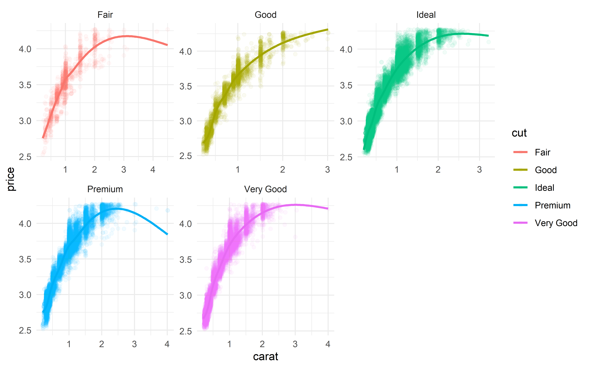
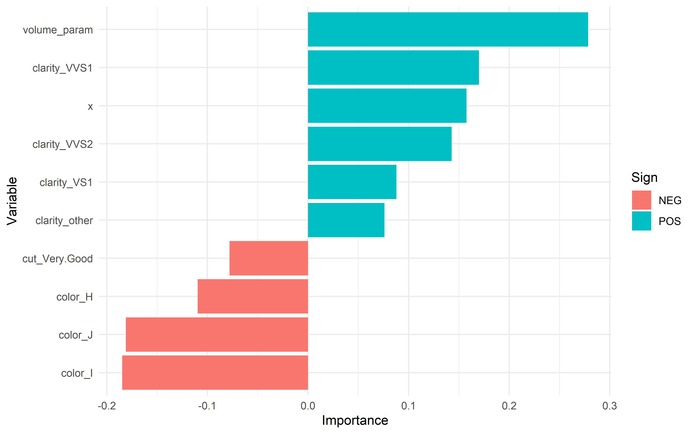
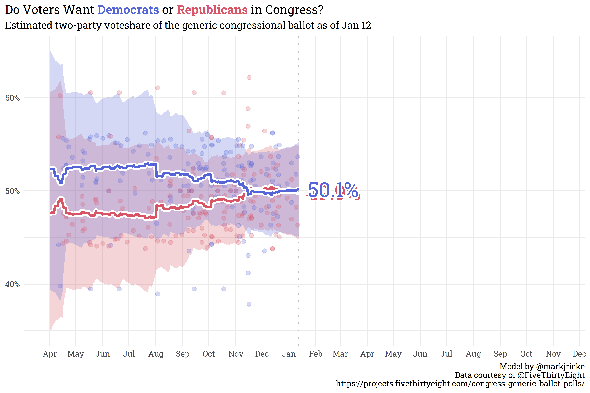
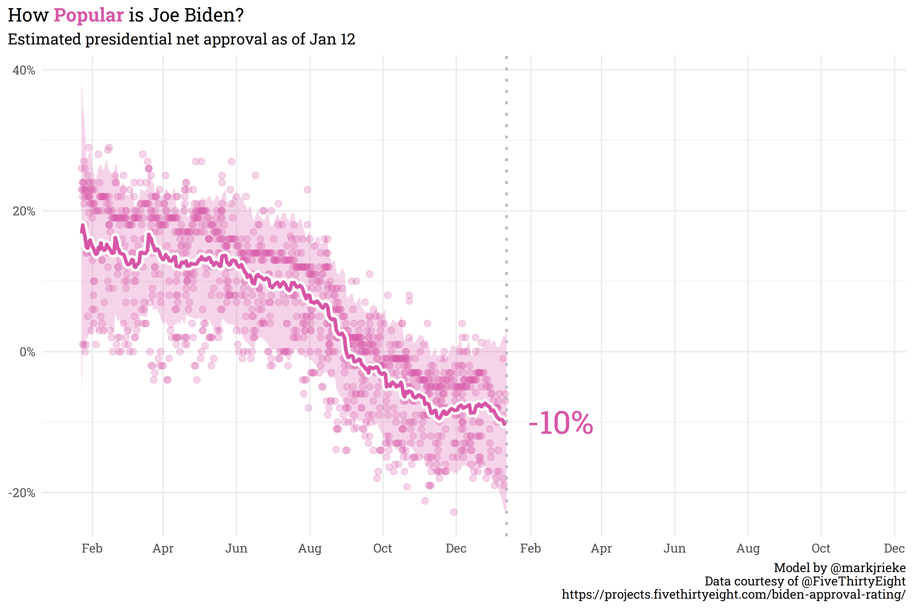
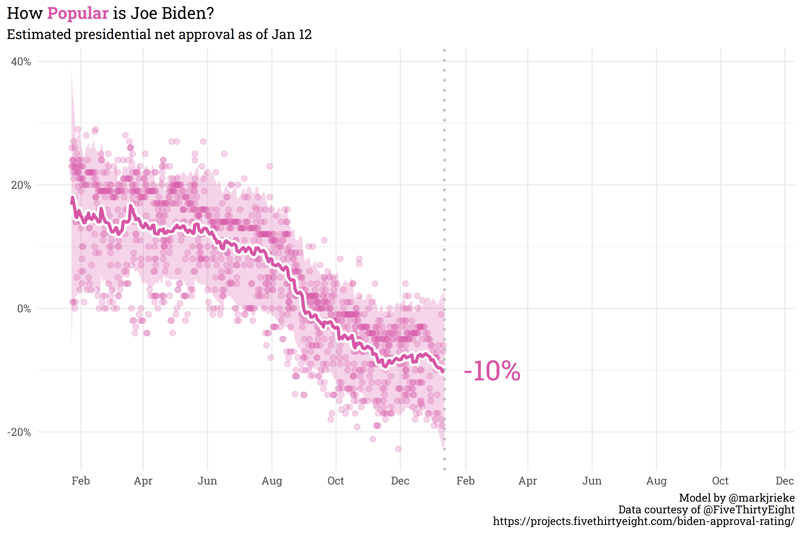

In the year since I started this blog, there’s been a lot that’s happened: I learned to use R, picked up the basics of machine learning, and moved into a new job/industry. I spend a lot of time thinking about what’s coming down the pipeline and how much further I have to go on projects that I have planned, but it’s worthwhile every now and then to take a look back and see just how far I’ve come.
Some accomplishments I’m proud of
Learning R
A year ago, I couldn’t write a lick of R code — I lived and breathed Excel, and was a bit afraid of the transition from a GUI to an IDE. Now, I’d consider myself pretty well-versed in the language and am so glad I made the switch. Having moved to R, I realized how restrictive Excel was — R (or any other analytics-focused programming language) allows for the freedom of expression needed for any sort of serious analysis. This talk by Hadley Wickham was instrumental in pushing me to pick up R and is well worth a watch if you have the time.
{{% youtube "PURtmHwk_-0" %}}
Completing Stanford’s Machine Learning course
When I started learning R, I was most interested in getting to the point where I’d be able to implement machine learning models (this specifically came from reading the documentation for The Economist’s POTUS model and wanting to understand what was going on under-the-hood). Stanford’s online Machine Learning course was a thorough, technical introduction to the basics of machine learning. It doesn’t cover every model type, but gives a great foundation for how to understand new models by requiring that you write the models yourself (this was very useful and practical, but you won’t catch me using MATLAB anytime soon!).

Committing to rOpenSci
rOpenSci is a non-profit initiative committed to creating and maintaining a variety of open-source R packages. For work, I use one of their packages, the qualtRics package, almost daily for extracting survey responses from Qualtrics’ API. I added a small function, fetch_id(), that allows you to pull in survey responses based on the survey’s name, rather than looking up the miscellaneous string of numbers that constitute the survey_id. It’s a small helper function, but working on it taught me a lot about documentation, testing, package development, and contributing to open-source software.
library(dplyr)
library(qualtRics)
all_surveys() %>%
fetch_id("Mark's Example Survey") %>%
fetch_survey() %>%
knitr::kable()
##
|
| | 0%
|
|======================================================================| 100%
| 2022-01-12 15:20:31 |
2022-01-12 15:20:38 |
Survey Preview |
NA |
100 |
7 |
TRUE |
2022-01-12 15:20:40 |
R_XFVjzAh4MalrLmF |
NA |
NA |
NA |
NA |
29.73351 |
-95.5564 |
preview |
EN |
Strongly agree |
Putting together a developer package
At some point this past year, I found myself either re-writing the same chunks of code repeatedly or re-defining functions across every project. After a lengthy period of hesitation, I finally picked up the R Packages book by Hadley Wickham and Jenny Bryan and put together my own personal package, {riekelib}. It’s just a collection of small helper functions that I use regularly for both personal and professional projects, but it’s really helped speed up workflows, since I can just load the library rather than re-write code or functions! Here are a few examples:
library(riekelib)
# beta_interval() gives lower & upper bounds of a beta distribution's confidence interval
tibble::tibble(alpha = c(85, 100),
beta = c(15, 500)) %>%
beta_interval(alpha, beta) %>%
knitr::kable()
| 85 |
15 |
0.7741265 |
0.9126452 |
| 100 |
500 |
0.1379480 |
0.1974895 |
# percent() returns the percentage each value or combination of values appear in a tibble
iris %>%
tibble::as_tibble() %>%
percent(Species) %>%
knitr::kable()
| setosa |
0.3333333 |
| versicolor |
0.3333333 |
| virginica |
0.3333333 |
Plots across the year
Possibly the most visually-engaging way to track growth throughout the past year is to look back on how different plots have evolved. Here’s a walkthrough of some choice plots that I’ve made throughout the year.
The first plot I ever created in R, made with base R’s plot() function, compares speed & distance from the cars dataset. There’s not really anything visually compelling here, but it gives the starting point.

This next plot shows my first attempt at creating a ggplot. I remember struggling a lot with this when trying to learn the ins and outs of putting together and formatting the plot, but that struggle was well worth it. I learned not only the basics of how to put together a plot with ggplot, but also, more importantly, how to search and troubleshoot issues. I also like that I was able to explore a topic visually with this plot: while the winner of the presidential election overperforms in the electoral college relative to the popular vote, republican candidates consistently have a slightly stronger electoral college overperformance due to small-state bias.

I started playing around with custom themes, and even setup my own theme elements so that I could reference them easily. This was the first time I broke away from the default theme for ggplot. Additionally, this was the first time I used any sort of statistical methods to make a projection. The projection itself is pretty bad/underconfident, but the methodology was sound.

Of all the posts I wrote in 2021, this may be the one I’m most proud of. Firstly, I learned a lot of new techniques needed to create maps and animations in R, but I also made a data-backed point: Raphael Warnock, one of the current Democratic senators from Georgia, likely won his election because Republican voters split their ticket between Kelly Loeffler and Doug Collins.


This next one is just fun, but I used R to make some artwork! I liked it so much, that I ended up making this my site header.

I spent a lot of time this past year learning how to implement machine learning methods, but eventually got to the point where I feel confident building and troubleshooting models with the tidymodel framework. I had an “aha” moment when working on a classifier for everyone’s favorite dataset, the Titanic survival dataset, and everything finally clicked. The model wasn’t great, but being able to quickly build and iterate was game-changing.

With some machine learning under my belt, I spent some time practicing feature engineering with the diamonds dataset. From the variable importance plot, I found that some of the engineered features were among the most important for predicting a diamond’s price!


Most recently, I created a congressional ballot aggregator that weights polls by pollster, recency, sample size, and methodology. This was a huge effort to create a custom regression methodology, and I’m very happy with how it turned out! As of today, voters are just about even-split between Democrats and Republicans in the upcoming 2022 midterms.

Plans for 2022
I think I’ve come a long way in 2021 and I hope that in 2023, I can look back on 2022 and see a similar level of growth throughout the year. Here are a few things I plan on working on this year:
- Writing: I’ve spent a lot of time in 2021 working on technical skills, but haven’t really taken time to work on my writing. This will be an important focus for me in 2022, since technical information is useless if I’m not able to communicate it well.
- Bringing ML projects to the office: In my current job, we’ve been spending the majority of the last six months focusing on troubleshooting the errors and getting over the speed-bumps involved with changing our primary survey vendor. We haven’t had the bandwidth to work on higher level/higher value projects, but should be able to do so in the upcoming year. Some projects I’m excited to work on this year include:
- Variable importance in predicting positive sentiment in surveys;
- Patient segmentation with k-means clustering;
- Shiny App - “How confident am I?” - for educating our non-technical counterparts on confidence intervals vs. point estimates;
- Using NLP for predicting positive sentiment from patient comments;
- Topic modeling from comments for easier comment segmentation.
- Natural Language Processing: As alluded to above, I’d like to work with text data for predictive analysis this year — there’s a lot of valuable insight that can be drawn from text data once I understand how to extract it!
- Enrolling in a Master’s of D.S. program: While I’ve been able to pick up a lot of knowledge from free/low-cost resources online (as well as spending countless hours on StackOverflow), I believe it’s time to further my formal education by pursuing a Master’s of Data Science part-time. Enrolling in a master’s program should help improve both my technical and non-technical skills, as well as formalize my transition from engineering to data science with a degree.
- Forecasting the 2022 Midterms: A long-term goal since starting this blog was to learn how to and ultimately deploy a forecast model for the 2022 midterms. I believe I’m well on my way, and hope to be able to publish midterm forecast models for the House, Senate, and Gubernatorial races sometime in the summer this year.
All-in-all, I’ve got a lot on my plate for 2022, but I’m confident that I’ll be able to tackle the challenges that come my way this year! My schedule is in a good place — full but manageable. As a preview of the next post I have scheduled, here’s a model I built to estimate Biden’s approval:
 
